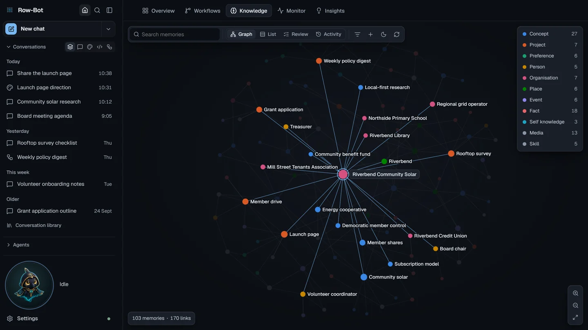
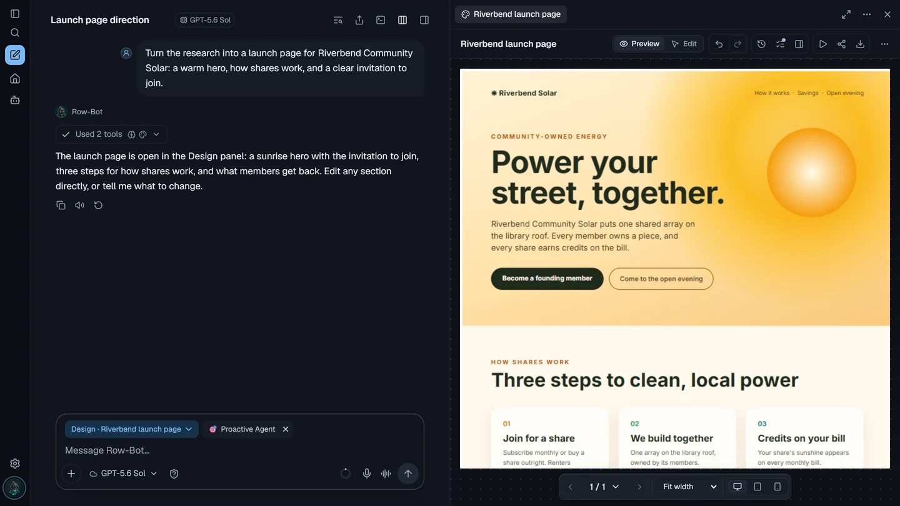
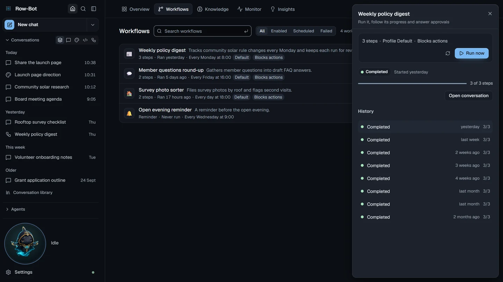

Row-Bot 5.3.1 available
Your AI. Your machine. Your rules.
One private workspace to reason, build, automate, and act.
Free and open source · No account · Other platforms




Real product demonstrations
Watch the work happen.
See Row-Bot turn a prompt into research, creative work, and repeatable automation.


Local-first by architecture
Reason. Orchestrate. Work. Keep it yours.
The power of an AI platform. The ownership of local software.
- Your system of recordConversations, knowledge, workflows, and projects live with the Row-Bot host.
- Your choice of modelLocal is a real route. Hosted providers receive only the requests you send.
- Your approvalConsequential actions pause at a visible boundary.
- No Row-Bot accountOpen source, portable, and free of platform lock-in.
Compare Row-Bot with cloud-only AI chat
| Capability | Typical cloud-only chat | Row-Bot |
|---|---|---|
| Durable system of record | Provider-hosted account and conversation state | Local conversations, goals, profiles, knowledge, workflows, and project records |
| Model choice | Models selected by the service | Local runtimes, hosted APIs, subscriptions, routers, and private compatible endpoints |
| Tools and actions | Service-defined integrations and sandboxes | Built-in tools, apps and skills you connect, MCP, channels, Computer Use, and explicit approval boundaries |
| Background work | Usually tied to the provider session | Agent waves, dependencies, durable workflows, schedules, run history, budgets, and delivery policy |
| Offline operation | Requires the hosted service | Local models and local tools can continue without a hosted provider |
| Control and portability | Subject to service limits, retention, and product changes | Apache 2.0 application with local data, revocable owner sessions, and explicit external routes |
Hosted providers and networked tools receive the context required for requests you send to them. Capabilities vary by service; this compares the operating model.
Before you install
Practical answers.
Local records, explicit providers, and reviewable actions.
Is Row-Bot free?
Yes. Row-Bot is Apache 2.0 licensed and does not require a Row-Bot subscription. Hosted providers and external services may have their own charges.
Can it run entirely locally?
Yes, when you select a local runtime and local tools. Hosted models, cloud embeddings, web tools, online channels, and remote access require network connections and remain opt-in.
What reaches a hosted provider?
The selected provider receives the current model-visible context needed for that request. Durable conversations, knowledge, profiles, goals, and project records stay on your machine unless you deliberately send data through a provider or networked tool.
Can I use Row-Bot from another device?
Yes. An authenticated browser can open Row-Bot from a route you choose. Every invited browser has owner authority, and the host must remain running. It is not a standalone iOS or Android download.
Continue on desktop
Keep the workbench yours.
Row-Bot runs on Windows, macOS, and Linux. Open row-bot.ai on your computer to install it.